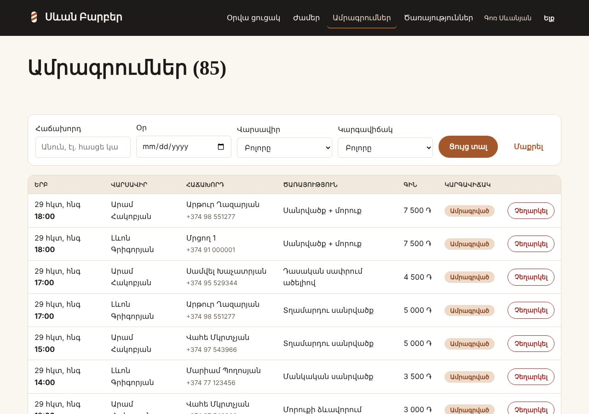
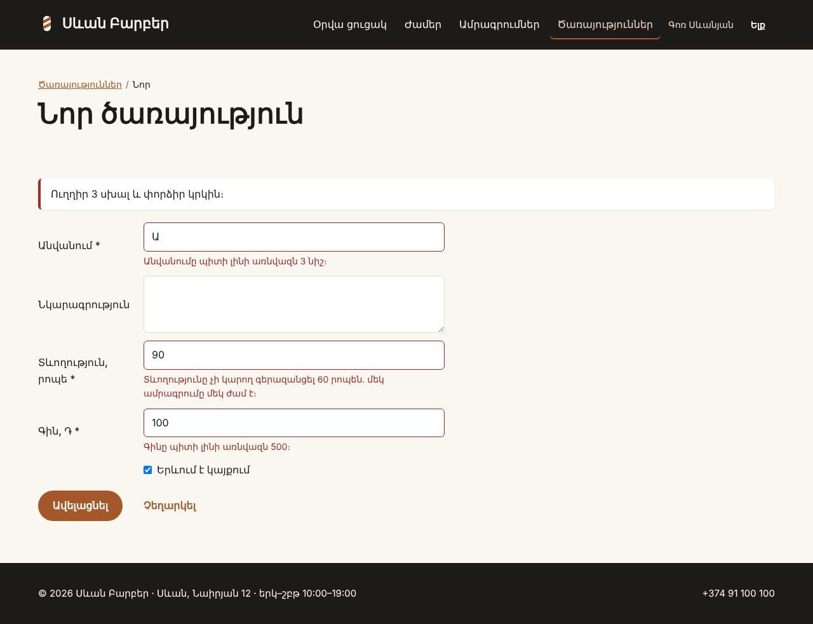

Վերջնական նախագիծ · շաբաթ 2 / 4 · ստուգակետ 2
Երկրորդ շաբաթը կայքը դարձնում է օգտագործելի․ այն, ինչ տեսնում է այցելուն, և այն, ինչով ադմինը լցնում է տվյալները։ Դեռ առանց մուտքի և առանց JS-ի, որ հիմքը աշխատի նախքան դրա վրա շերտեր ավելացնելը։
Կայքի հանրային մասը աշխատում է առանց մուտքի և առանց JS-ի․ ցուցակ, ֆիլտր, էջավորում, մանրամասների էջ։ Ադմինը ավելացնում, խմբագրում և ջնջում է հիմնական գրառումները՝ հայերեն սխալներով։ Մուտքը դեռ չկա․ ադմինի ուղիները առայժմ բաց են (կփակես ստուգակետ 3-ում)։


| # | Ինչ ես անում | Դաս |
|---|---|---|
| 1 | Ցուցակի էջ՝ paginate() և առնվազն մեկ ֆիլտր․ արժեքները՝ սպիտակ ցուցակով, էջավորումը՝ withQueryString() | PHP 10, 18, 20 |
| 2 | Մանրամասների էջ՝ {model:slug}, թաքցվածը և անհայտը → 404 | PHP 15, 20 |
| 3 | Ադմինի Route::resource՝ index, create, store, edit, update, destroy | PHP 19 |
| 4 | Form Request ամեն ֆորմայի համար, attributes()՝ հոդով, lang/hy/validation.php | PHP 21 |
| 5 | Soft delete, «Ջնջվածներ» էջ և restore(), եթե պատմությունը կարևոր է | PHP 11, 20 |
| 6 | Առնվազն 2 Blade կոմպոնենտ (<x-field>, քարտ, կարգավիճակ) | PHP 19 |
| 7 | Model::shouldBeStrict(), with() ամեն ցուցակում | PHP 20 |
| 8 | Առնվազն մեկ feature ճյուղ՝ merge-ով (օր. feature/admin-crud) | JS 17 |
Սխալ արժեքը (?date=1999-01-01, ?staff=abc) չի գցում սխալ․ այն պարզապես փոխարինվում է լռելյայնով։ Հանրային էջում դա ավելի լավ է, քան 422-ը։
public function show(Request $request, Service $service)
{
abort_unless($service->is_active, 404);
$days = TimeSlot::bookingDays();
$date = array_key_exists($request->query('date'), $days) ? $request->query('date') : array_key_first($days);
$staff = User::staff()->get(['id', 'name']);
$staffId = $staff->contains('id', $request->integer('staff')) ? $request->integer('staff') : null;
return view('services.show', [
'service' => $service,
'days' => $days,
'date' => $date,
'staff' => $staff,
'staffId' => $staffId,
'slots' => TimeSlot::freeFor($days[$date], $staffId),
]);
}
}// Ֆիլտրերը՝ սպիտակ ցուցակով կամ պարամետրով, ոչ մի փոփոխական SQL տեքստում
$status = array_key_exists($request->query('status'), Booking::STATUSES) ? $request->query('status') : null;
$staffId = $staff->contains('id', $request->integer('staff')) ? $request->integer('staff') : null;
$date = preg_match('/^\d{4}-\d{2}-\d{2}$/', (string) $request->query('date')) ? $request->query('date') : null;
$q = mb_substr(trim((string) $request->query('q')), 0, 60);
$bookings = Booking::query()
->select('bookings.*')
->join('time_slots', 'time_slots.id', '=', 'bookings.time_slot_id')
->with(['user:id,name,email,phone', 'service', 'slot.staff:id,name'])
->when($status, fn ($query) => $query->where('bookings.status', $status))
->when($staffId, fn ($query) => $query->where('time_slots.staff_id', $staffId))
->when($date, fn ($query) => $query->whereDate('time_slots.starts_at', $date))
->when($q !== '', fn ($query) => $query->whereHas('user', fn ($u) => $u->where(fn ($w) => $w
->where('name', 'like', "%{$q}%")->orWhere('email', 'like', "%{$q}%")->orWhere('phone', 'like', "%{$q}%"))))
->orderByDesc('time_slots.starts_at')
->paginate(15)
->withQueryString();select('bookings.*')՝ join-ից հետո, հակառակ դեպքում time_slots.id-ը կփոխարիներ bookings.id-ին, և «Չեղարկել»-ը կչեղարկեր ուրիշ ամրագրում։ Եվ որոնման orWhere-ները՝ առանձին where(fn …)-ի մեջ, որ OR-ը չշրջանցի մնացած ֆիլտրերը։
protected function prepareForValidation(): void
{
// checkbox-ը չնշված լինելու դեպքում չի ուղարկվում — PHP Դաս 06
$this->merge(['is_active' => $this->boolean('is_active')]);
}
public function rules(): array
{
return [
'name' => ['required', 'string', 'min:3', 'max:80'],
'description' => ['nullable', 'string', 'max:500'],
'duration_min' => ['required', 'integer', 'min:10', 'max:' . TimeSlot::LENGTH_MIN],
'price' => ['required', 'integer', 'min:500', 'max:100000'],
'is_active' => ['boolean'],
];
}
public function attributes(): array
{
return [
'name' => 'անվանումը',
'description' => 'նկարագրությունը',
'duration_min' => 'տևողությունը',
'price' => 'գինը',
];
}
public function messages(): array
{
return ['duration_min.max' => 'Տևողությունը չի կարող գերազանցել ' . TimeSlot::LENGTH_MIN . ' րոպեն․ մեկ ամրագրումը մեկ ժամ է։'];
}
}public function store(ServiceRequest $request)
{
$service = new Service($request->validated());
$service->slug = Service::uniqueSlugFor($service->name);
$service->save();
return redirect()->route('admin.services.index')->with('success', "«{$service->name}»-ը ավելացվեց։");
}
public function edit(Service $service)
{
return view('admin.services.form', compact('service'));
}
public function update(ServiceRequest $request, Service $service)
{
$service->fill($request->validated());
if ($service->isDirty('name')) {
$service->slug = Service::uniqueSlugFor($service->name, $service->id);
}
$service->save();
return redirect()->route('admin.services.index')->with('success', "«{$service->name}»-ը պահպանվեց։");
}@props(['name', 'label', 'type' => 'text', 'value' => null, 'required' => false, 'hint' => null])
<label for="{{ $name }}">{{ $label }}@if ($required) *@endif</label>
<div @class(['field', 'has-error' => $errors->has($name)])>
@if ($type === 'textarea')
<textarea id="{{ $name }}" name="{{ $name }}" {{ $attributes }}
@error($name) aria-invalid="true" aria-describedby="{{ $name }}-error" @enderror>{{ old($name, $value) }}</textarea>
@else
<input id="{{ $name }}" name="{{ $name }}" type="{{ $type }}" value="{{ old($name, $value) }}" {{ $attributes }}
@error($name) aria-invalid="true" aria-describedby="{{ $name }}-error" @enderror>
@endif
@if ($hint)
<small class="meta">{{ $hint }}</small>
@endif
@error($name)
<small class="field__error" id="{{ $name }}-error">{{ $message }}</small>
@enderror
</div>?sort=price;DROP TABLE կամ ?status=xyz → էջը բացվում է, ոչինչ չի կոտրվումshouldBeStrict-ը միացված է)git log --graph --oneline՝ մեկ merge| Սխալ | Ինչ է լինում | Ինչպես ճիշտ |
|---|---|---|
Model::create($request->all()) | Ֆորմային ավելացված ցանկացած դաշտ գնում է բազա | $request->validated() (PHP Դաս 20) |
orderBy($request->sort) | Սյունակի անունը Eloquent-ը չի պարամետրացնում | Սպիտակ ցուցակ՝ array_key_exists (PHP Դաս 10, 18) |
->paginate(15) առանց withQueryString() | Էջ 2-ում ֆիլտրը կորչում է | ->paginate(15)->withQueryString() |
checkbox-ը boolean կանոնով | Չնշված checkbox-ը չի ուղարկվում, is_active-ը չի փոխվում | prepareForValidation()-ում $this->boolean() |
:attribute-ը թարգմանության մեջ | «անվանումը-ը պարտադիր է» | :Attribute պարտադիր է։՝ անունները հոդով (PHP Դաս 21) |
Join առանց select('table.*') | id-ները խառնվում են, կոճակները աշխատում են ուրիշ տողի վրա | ->select('bookings.*') |
| Եթե խրվել ես | Նայիր |
|---|---|
| Ֆիլտրեր և էջավորում | PHP Դաս 10, Տնային 19 |
| Form Request, հայերեն սխալներ | PHP Դաս 21, Տնային 21 |
| Soft delete, resource controller | ՏեխնոՄարկետ · Laravel՝ Admin/ProductController |